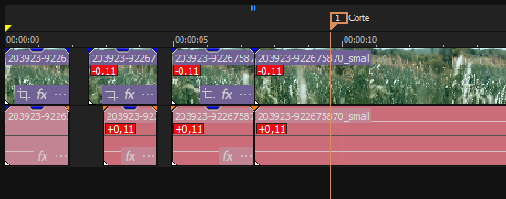
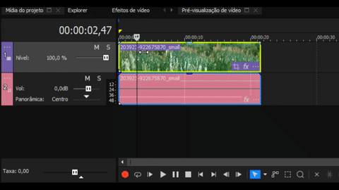
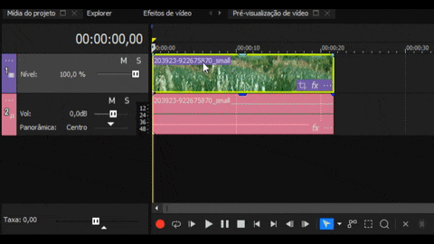
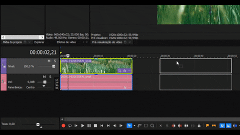
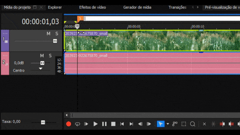
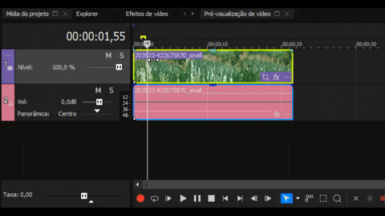

5 Sony Vegas Shortcuts That Will Double Your Productivity
Published on June 29, 2025 • 5 min read

In video editing, every second counts. The difference between a slow, click-heavy workflow and an agile one is often, quite literally, at your fingertips. Putting the mouse aside and mastering keyboard shortcuts is what separates a beginner editor from an efficient professional.
As a productivity enthusiast, I am always looking for ways to optimize my time on the editing timeline. That's why I've compiled 5 of my favorite shortcuts in Sony Vegas Pro that, if incorporated into your daily routine, can genuinely speed up your most common tasks.
Shortcut 1: S - Split

What it does: Cuts one or more video/audio clips exactly where the timeline cursor is positioned.
Why it's a game-changer: This is the most used shortcut in editing. Instead of grabbing the razor tool, clicking on the exact spot, and then switching back to the selection tool, you simply position the cursor and press 'S'. This saves 2 to 3 clicks per cut. In an edit with hundreds of cuts, this represents a gigantic time saving.
Shortcut 2: G & U - Group and Ungroup

What it does: G groups the selected audio and video events. U ungroups them.
Why it's a game-changer: By default, the audio and video of a clip come grouped. To create more advanced edits like a J-Cut (the audio of a scene starts before the video) or an L-Cut (the video of a scene ends, but the audio continues), you need to separate them. Pressing 'U', adjusting the audio/video, and then 'G' to regroup is infinitely faster than right-clicking and looking for the option in the menu. This gives you full control over your timeline.
Shortcut 3: Ctrl + Drag - Copy Event

What it does: Instead of using Ctrl+C and Ctrl+V, you can simply hold the Ctrl key, click on a clip on the timeline, and drag it to create an instant copy.
Why it's a game-changer: It's the fastest way to duplicate clips, sound effects, or graphics. It's a shortcut that, once you get used to it, you can't live without because of the fluidity it adds to the assembly process.
Shortcut 4: M - Insert Marker

What it does: Adds a marker at the exact point of the cursor on the timeline.
Why it's a game-changer: Essential for organizing long projects. You can use markers to identify important beats in the music, points where a character speaks, or moments that need a special effect. Instead of re-watching to find a spot, you simply navigate between your markers, making the timeline organization much more visual and efficient.
Shortcut 5: Ctrl + Shift + B - Add Transition Effect

What it does: Applies a "fade" (smooth transition) in and out of all selected events.
Why it's a game-changer: When you have dozens of photos or short clips in sequence and want them all to have a smooth transition, instead of applying the fade to each one, you select all (Ctrl+A) and press Ctrl+Shift+B. In a second, all your clips get a professional transition, saving immense manual labor.
Conclusion
Mastering these 5 shortcuts is a fantastic first step to transform your editing process:
Sto splitG / Uto group and ungroupCtrl + Dragto copy eventsMto insert markersCtrl + Shift + Bto apply transitions
Remember: the goal of using shortcuts is not just to be faster. It's about removing the friction between your creative vision and the tool, allowing your ideas to flow directly to the timeline without interruptions and with more precision.
It is worth noting that if you want to go even deeper, the official Vegas documentation offers a complete list of shortcuts that can help you further customize your workflow.